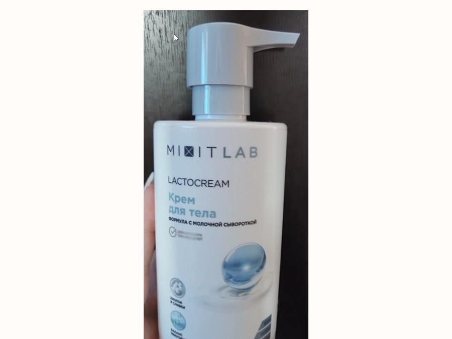

Отёки
Будет доступно в ближайшем обновлении
Коротко и по делу
Выбирай тему под день: быстро проверить продукт, разобраться со срывом, отёками, циклом, базой или БАДами
Материалы короткие: без сухой теории, с понятной пользой и действиями, которые можно применить сегодня
Введи продукт и быстро пойми: считать, не считать или быть аккуратнее
Где ломается система “запретила — сорвалась — снова запретила”
Новый материалПочему появляется “апельсиновая корочка” и как работать с ней без паники
Новый материалПротеин, креатин, BCAA, омега-3 и витамин D: что это и как выбирать
Будет доступно в ближайшем обновлении
Будет доступно в ближайшем обновлении
Введи продукт и пойми, считать его или нет. Это быстрый ориентир для ежедневных решений, а не строгий запрет
Быстрый ориентир для ежедневных решений: когда можно расслабиться, а где лучше учесть порцию
Огурцы, помидоры, зелень, кабачки, капуста, брокколи, грибы, вода, чай и кофе без добавок
Крупы, хлеб, паста, картофель, батат, кукуруза, свекла, морковь, бобовые, мясо, рыба, яйца, творог
Масла, орехи, семечки, авокадо, оливки, жирные соусы, сладкое, сухофрукты, соки, алкоголь, фастфуд
Обычно кажется: “я просто не выдержала”, но чаще срыв начинается намного раньше — когда весь день терпела, запрещала и пыталась быть идеальной
Срыв часто выглядит как проблема сладкого или “слабой силы воли”, но обычно перегружается вся система: мало еды, много запретов, усталость, стресс и мысль “теперь уже всё испорчено”
Телу сложно держаться на голоде
Любое отклонение ощущается как конец системы
После срыва хочется наказать себя жёстче
Проблема не в том, что тебе “не хватает дисциплины”. Проблема в системе, где слишком много запретов, голода и чувства вины.
Спокойное питание строится не через боль и наказание, а через заботу к себе: можно съесть торт или бургер, вернуться к балансу и не загонять себя в режим “теперь всё идеально”
На курсе мы учимся выстраивать питание спокойнее: с регулярными приёмами пищи, насыщением, гибкостью и без наказания после сложного дня
Один неидеальный день не нужно отрабатывать голодом. Выбери ближайший спокойный шаг и продолжай режим без наказания.
Назови факт спокойно: был неидеальный прием еды или день. Это не отменяет курс, прогресс и право продолжать без наказания.
Верни обычный завтрак, воду и 10-20 минут мягкой ходьбы. Не начинай день с голода, весов и попытки “исправить” вчера.
Собери ближайшую тарелку: белок, гарнир и овощи. Режим возвращается через следующий нормальный прием пищи, а не через новый запрет.
Не объявляй сладкое врагом. На следующий прием добавь белок и углеводы: творог с фруктом, яйца с хлебом или курицу с рисом.
Оставь сладкое после еды, а не вместо еды: например, десерт после обеда 2-3 раза в неделю. Так оно перестает быть “последним шансом”.
Выбери, что произошло, почему это могло случиться, и получи конкретные шаги на сейчас и завтра
Отёки не всегда означают, что “что-то пошло не так”. Часто это реакция на цикл, соль, сон, стресс и нагрузку
Короткий план без борьбы с телом: что влияет на рельеф кожи, с чего начать и как не навредить
Два быстрых блока, которые удобно держать под рукой каждый день
Это не список “идеального дня”, а мягкая опора: вода, питание, шаги, уход и поверхностная работа
Вода не “смывает целлюлит”, но нормальный питьевой режим помогает не усиливать задержку жидкости
Выбери, что сильнее всего мешает рельефу кожи сейчас — вода, движение, питание или регулярность
Обычно влияет не один фактор, а сочетание привычек, воды, движения и особенностей тела
Поэтому работаем не одной банкой крема, а понятной связкой: режим, движение и мягкий уход
Это маршрут на ближайшие недели: без рывков, но с понятными повторяемыми шагами
Белок в 2-4 приёмах пищи, овощи или клетчатка, нормальные углеводы и вода
Цель — стабильность, регулярная еда и спокойный режим без жёстких откатов
Силовые по курсу помогают телу становиться плотнее и визуально собраннее
В дни без тренировки оставляем шаги, прогулку или лёгкую активность
Сухая щётка и спокойная техника помогают с кровообращением, ощущением кожи и регулярным уходом
Работаем мягко: без боли, синяков и попытки “стереть” кожу
Сначала разберём, зачем он нужен, а потом — какую щётку взять, когда делать и как пройти бёдра и ягодицы
Сухая щётка не “убирает целлюлит”, но помогает поддержать кожу и сделать уход регулярным
Лучше всего — щётка с натуральной щетиной, не слишком жёсткая и не царапающая кожу
Если кожа чувствительная, бери мягкую щётку или перчатку-варежку
Вариант 1: до тренировки на ягодицы, чтобы разогреть кожу
Вариант 2: после тренировки для восстановления, но только когда кожа сухая
Ориентир — 10-15 минут на весь массаж
Для бедра и ягодицы можно держать по 5-7 минут, если коже комфортно
После сухой щётки кожа уже механически простимулирована, поэтому активные разогревающие средства могут дать раздражение и красноту
Крем или лосьон для тела с мягкими компонентами: пантенолом для успокоения, церамидами для кожного барьера, глицерином или гиалуроновой кислотой для увлажнения, скваланом или маслами для смягчения, алоэ для чувствительной кожи
 перчатка
перчатка
Мягкий вариант для чувствительной кожи и аккуратного массажа в душе
 щётка
щётка
Натуральная щетина и длинная ручка: удобно работать по бёдрам, ягодицам и трудным зонам

уходПосле душа нанеси крем для тела MIXIT Lactocream: он увлажняет кожу после щётки и не перегружает её скрабом
Если день разваливается, не нужно спасать всё идеально. Верни базу — этого уже достаточно, чтобы не откатиться
Цикл не обязан управлять всей жизнью, но его удобно учитывать, чтобы не требовать от тела одинаковой мощности каждый день
Можно снизить интенсивность, оставить ходьбу, растяжку, лёгкую силовую или отдых по самочувствию
Часто легче повышать нагрузку, пробовать прогрессию и делать более энергичные тренировки
Энергии может быть больше, но технику и разминку лучше не пропускать
Нормально чувствовать спад, отёки, голод и тягу к более спокойному режиму
Разбираем баночки с @qmellz

Советую Сывороточный или Растительный